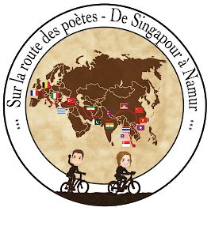

Raphaël Liégeois
Post-doctoral Research Fellow
Ecole Polytechnique Fédérale de Lausanne
Home
In March 2018 I joined Prof. Dimitri Van de Ville at École Polytechnique Fédérale de Lausanne as a member of the IVAN (Interactive and Visual Analysis of Networks) project. Prior to that I did a two-year post-doctoral research stay with Prof. Thomas Yeo at the Singapore Institute for Neurotechnology (SINAPSE). I did my PhD at the University of Liège, in Belgium, under the co-supervision of Prof. Rodolphe Sepulchre (U.Cambridge/U.Liège) and Prof. Steven Laureys (U.Liège). The thesis entitled 'Dynamical modelling from resting-state brain imaging' explores experimental questions such as the role of brain anatomy in the emergence of brain dynamics but also related methodological aspects linked to systems identification.
My recent research focuses on the theoretical properties of dynamical models of cerebral functional connectivity. I also develop new markers of dynamical functional connectivity from neuroimaging time-series driven by concrete clinical applications. More precisely, my research interests include:
- Auto-regressive models
- Null-model testing
- Dynamic functional connectivity
- Resting-state fMRI
- Alzheimer's disease
A may 2018 CV is available.
Publications
NeuroImage Vol. 163, pp. 437–455, 2017. [BioRxiv link]
R. Liégeois, T.O. Laumann, A.Z. Snyder, H.J. Zhou, and B.T.T. Yeo. Interpreting Temporal Fluctuations In Resting-State Functional Connectivity MRI. NeuroImage Vol. 163, pp. 437–455, 2017. [BioRxiv link]
R. Liégeois, E. Ziegler, C. Phillips, P. Geurts, F. Gomez, M. Bahri T. Yeo, A. Soddu, A. Vanhaudenhuyse, S. Laureys, and R. Sepulchre. Cerebral functional connectivity periodically (de)synchronizes with anatomical constraints. Brain Structure and Function, Vol. 221(6), pp. 2985-97, 2016.
[Publisher's link]
R. Liégeois, B. Mishra, M. Zorzi, and R. Sepulchre. Sparse plus low-rank autoregressive identification in neuroimaging time series. Proceedings of the 54th IEEE Conference on Decision and Control (CDC), pp. 3965-3970, 2016. [Publisher's link] [Code]
H. Chen, R. Liégeois, J. de Bruyn, and A. Soddu. Principal-component analysis of particle motion. Physical Review E, Vol.91(4), 2015. [Publisher's link]
Theses
R. Liégeois, Structured sparse principal component analysis for fMRI imaging, Master's Thesis, 2011.
Conference communications
R. Liégeois, J. Li, N. Kuek, R. Kong, C. Orban, J. Zhou, M. Sabuncu, T. Ge, and T. Yeo. Dynamic and static resting-state functional connectivity encode complementary behavioral information. OHBM, Singapore, June 2018.
P. Wang, R. Liégeois, R.Kong, G. Deco, M.Van den Heuvel and T. Yeo. From perception action to spontaneous thoughts: computational insights into a cortical hierarchy, OHBM, Vancouver, June 2017.
R. Liégeois, T. Laumann, A. Snyder, H. Zhou, A. Zalesky and T. Yeo. Stationarity does not imply absence of brain states: interpreting fluctuations in fMRI connectivity, OHBM, Vancouver, June 2017.
R. Liégeois, M. Zorzi and T. Yeo. Dynamical component analysis of fMRI time series, OHBM, Geneva, June 2016.
R. Liégeois, B. Mishra, M. Zorzi, and R. Sepulchre. Sparse plus low-rank autoregressive identification in neuroimaging time series. 54th IEEE Conference on Decision and Control (CDC), pp. 3965-3970, 2016.
R. Liégeois, C. Phillips, M. Bahri, S. Laureys, and R. Sepulchre. Total connectivity: a marker of dynamical functional connectivity applied to consciousness, OHBM, Honolulu, 2015.
R. Liégeois, M. Bahri, M. Zorzi, S. Laureys, and R. Sepulchre. Dynamical properties of fMRI connectivity in neuronal networks mediating consciousness, Selected for an oral presentation at the 2nd Scientific Workshop on Brain Function, Whistler, 2014.
R. Liégeois, E. Ziegler, C. Phillips, F. Gomez, A. Soddu, S. Laureys, and R. Sepulchre. Assessing dynamical correlations between functional and structural brain connectivity, OHBM, Hamburg, 2014.
R. Liégeois, E. Ziegler, M. Zorzi, A. Soddu, P. Geurts, S. Laureys, and R. Sepulchre. Dynamics in neuroimaging data analyses, GIGA research days, Liège, June 2013.
R. Liégeois, A. Soddu and R. Sepulchre. Note on how cerebral functional connectivity encodes structural constraints of the human brain, 32nd Benelux Meeting on Systems and Control, Han-sur-Lesse, Belgium, March 2013.
R. Liégeois, A. Vanhaudenhuyse, S. Laureys, R. Sepulchre and A. Soddu. Centering fMRI data or Removing their First PC amounts to Regressing out the Global Signal, Abstract accepted at OHBM, Seattle, 2013.
R. Liégeois, A. Soddu and R. Sepulchre. Large-scale optimization for component analysis of fMRI resting brain data, 31st Benelux Meeting on Systems and Control, Heijderbos, The Netherlands, March 2012.
Invited talks
R. Liégeois, From static to dynamic representations of resting-state Functional Connectivity MRI. Invited by Prof. M. Breakspear, Queensland Institute of Medical Research, Brisbane, Australia, Octobre 2017.
R. Liégeois, From static to dynamic representations of resting-state Functional Connectivity MRI. Invited by Prof. A. Zalesky, University of Melbourne, Australia, Septembre 2017.
R. Liégeois, Sparse plus low-rank graphical models identification in neuroimaging time series, Invited by Prof. J. Songsiri, Chulalongkorn University, Bangkok, Thailand, October 2016.
R. Liégeois, Exploring brain dynamics to characterize Alzheimer’s disease, Rotary Seminars, Invited by the Rotary Club of Tanjong Pagar, Singapore, October 2016.
R. Liégeois, Dynamical models of fMRI time series, Seminar series of the Clinical Imaging Research Center, Singapore, August 2016.
R. Liégeois, B. Mishra, and R. Sepulchre. Optimizing the low-rank plus sparse decomposition of graphical models, FNRS FRANSO Meeting, Liège, May 2015.
R. Liégeois, Time and time series, The ULg-PhD meeting, Liège, January 2015.
R. Liégeois, Spectral properties of fMRI time series fluctuations on cerebral anatomy., Resting fMRI workshop, Pitié-Salpetrière Hospital, Paris, June 2013.
Contact
Raphaël Liégeois
Campus Biotech - Chemin des Mines, 9
CH-1202 Geneva
Switzerland
E-mail: raphael.liegeois@epfl.ch
Phone: +41 21 695 52 38
Misc.
At the end of my PhD thesis, I represented the University of Liège at the contest "Ma thèse en 180 secondes", inspired from the Three Minute Thesis competition. I started my presentation with this citation by the anthropologist Lyall Watson:
"If the brain were so simple we could understand it, we would be so simple we couldn't."
The variety and the freshness of research conducted in academia is one of my invariable sources of curiosity and pleasure. To highlight the work done by ULg researchers I co-organized the first Pecha Kucha night in Liège during which eight PhD students presented their work to a wide audience. My favorite performances include "How the use of antonyms shapes our representation of the world", "Near death experiences and dualistic questioning", and "The invention of taste".
 As a transition between the research stays in Singapore and Switzerland, I came back to Europe by bike. Along the way we recorded over 40 poets from 13 different countries. "Sur la route des poètes" was designed in collaboration with the Belgian television Canal C for which we produced 10 episodes capturing the essence of our poetic encounters.